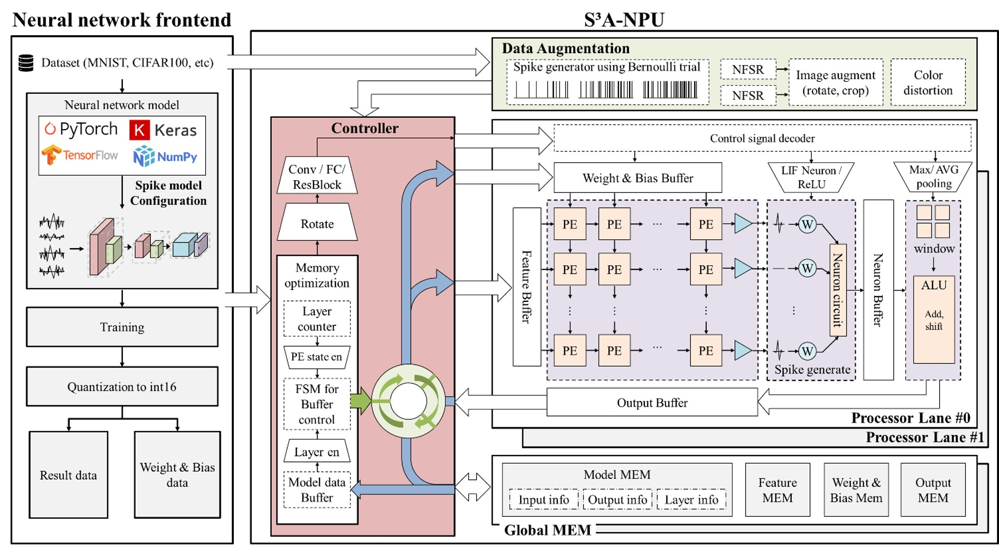
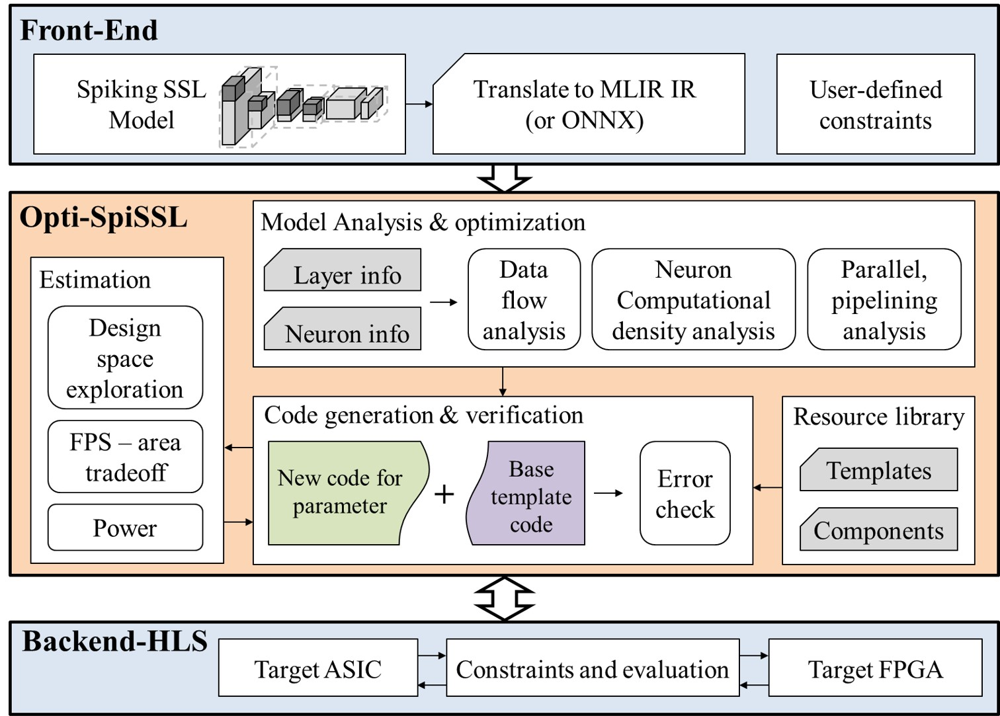
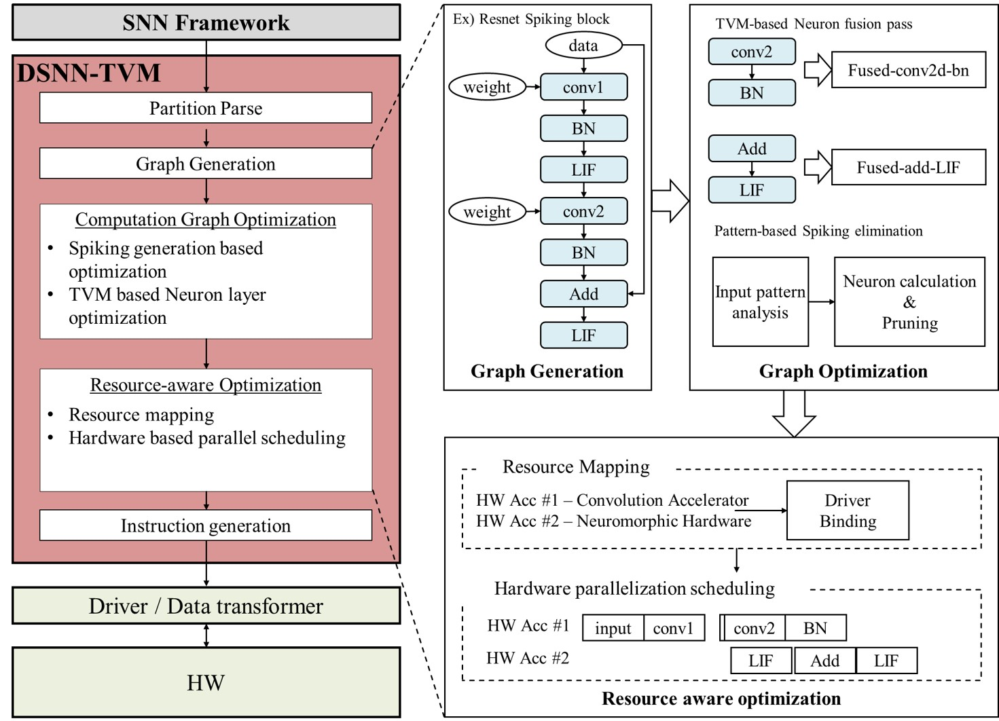
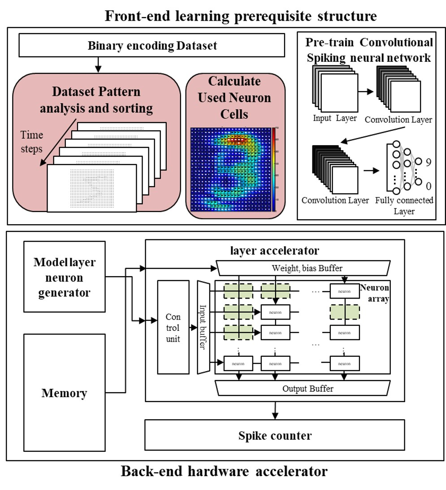
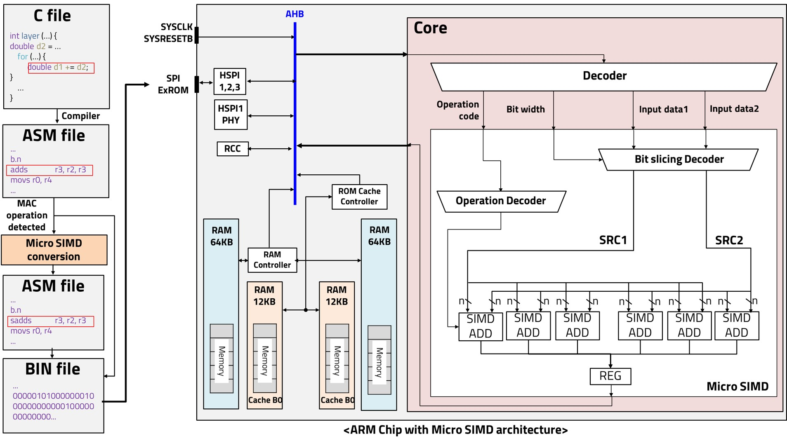
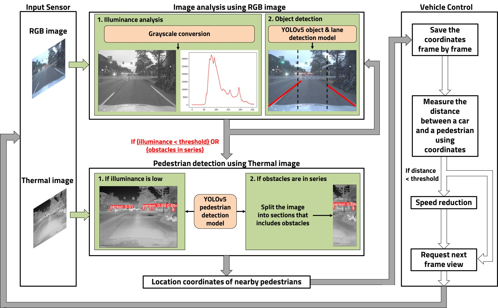
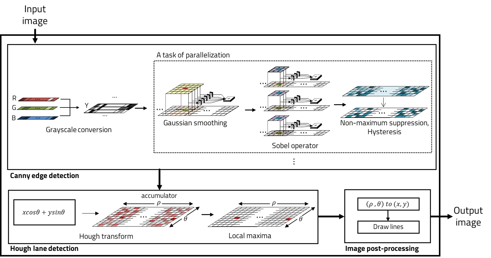

Research
Everything grows from one root — energy-efficient AI — and branches into three targets: cores & accelerators, memory & compute-in-memory, and autonomous driving.
Efficient AI Optimization
Quantization, pruning, and dedicated accelerator design — squeezing models onto edge hardware without losing what matters.
Sensor Fusion Accelerators
Deep learning-based fusion of camera, LiDAR, and thermal data, with accelerator architectures built for efficient real-time processing.
Accelerator Software Systems
Optimization automation and analysis frameworks — compilers and toolchains that generate tuned hardware code automatically.
Core & Accelerator
→ FOCUS-CORE └─ the spine compiled into silicon01 Hardware Accelerator for Spiking Self-Supervised Learning 2025 · ACTIVE +
Self-supervised learning (SSL) learns from unlabeled data brilliantly — but it's too heavy for edge devices. Spiking Neural Networks (SNNs) are the opposite: asynchronous, event-driven, extremely low-power. No accelerator combining the two existed, so we built one. S³A-NPU maximizes efficiency through data preprocessing, memory optimization, parallel processing, and pipelined structures that exploit both SNN and SSL characteristics.
Related publications

02 End-to-End Framework for Spiking Self-Supervised Learning 2025 · ACTIVE +
A great accelerator is useless if nobody can program it. Opti-SpiSSL automates optimization and hardware code generation for SNN-based SSL models across FPGA and ASIC platforms — the first comprehensive framework of its kind, bridging the hardware-software gap so spiking SSL can actually ship.
Related publications

03 Runtime Scheduler & Optimization for SNN Accelerators 2024 +
SNN software tooling is still early: existing simulators support only narrow environments and lack hardware-aware optimization. We built a runtime hardware code generation and optimization framework for deep SNNs on top of the TVM compiler stack — supporting SNNTorch and SpikingJelly, and automatically generating optimized code via pruning, quantization, and scheduling tailored to the target hardware.

04 High-Speed Energy-Efficient Dynamic Pruning 2024 +
Convolutional SNNs consume far less power than CNNs but pay for it in accuracy. Our fix: classify inputs by pattern, compute multiple convolutional layers in parallel per class, and prune processing elements to fit each input. The result is more accurate and trainable on lightweight hardware.
Related publications

05 Micro-SIMD On-Chip Implementation 2023 +
The Arm Cortex-M0 has no SIMD — so we gave it one. Standard SIMD needs 128-bit buses and heavy vectorization preprocessing; our micro-SIMD executes custom 16-bit instructions directly on the M0 pipeline. For the loop-heavy MAC workloads of CNN training, this tiny parallelism goes a very long way on a very small core.

Memory & CIM
→ FOCUS-MEMORY └─ the same spine, at the memory wall06 Dynamic Adaptive On-Chip Memory Optimization 2025 +
The headline contribution of S³A-NPU isn't the datapath — it's the memory subsystem. On-chip buffer allocation adapts at runtime to the workload phase of spiking SSL, cutting off-chip traffic and keeping the accelerator fed. The memory wall is where low-power AI is won or lost, and this is my main attack on it.
Related publications

07 SNN-based Compute-In-Memory (RRAM) 2023 · MPW +
If moving data costs the most energy, do the compute inside the memory. We designed an SNN-based compute-in-memory architecture with RRAM synaptic circuits — PSpice-modeled neurons, fabricated synapse arrays on an MPW shuttle. Neuromorphic computing where storage and processing are the same device.
See also

Autonomous Driving
→ FOCUS-AUTO └─ the same spine, on wheels08 Thermal-RGB Data Fusion for Safe Automotive Driving 2024 +
Pedestrian accidents made up 35.5% of Korean traffic accidents over two years — and LiDAR alone can't prevent them. We fuse selective thermal data with RGB object detection: thermal is integrated only where obstacle density is high, catching pedestrians outside the visible range. Accuracy jumped from 40.43% to 83.91%, running at 2.7 FPS / 175.95 MB on PC and 0.75 FPS / 140.08 MB on a Jetson Nano.
Related publications

09 Lightweight Object Detection & Lane Recognition 2021 — 2024 +
Perception has to run on the car, not the cloud. We parallelized Canny edge stages for lane recognition, masked semantic-difference regions to skip unchanged pixels, and built low-power lane detection units small enough for automotive microcontrollers — plus a GTA5 digital twin to validate self-driving algorithms safely before the road.
Related publications
